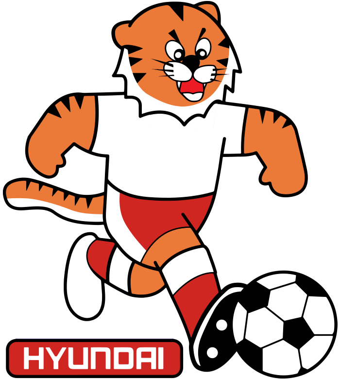
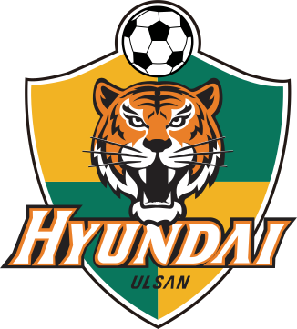
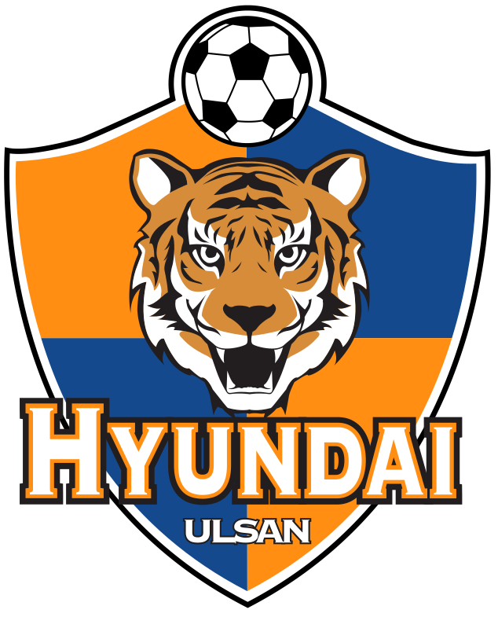
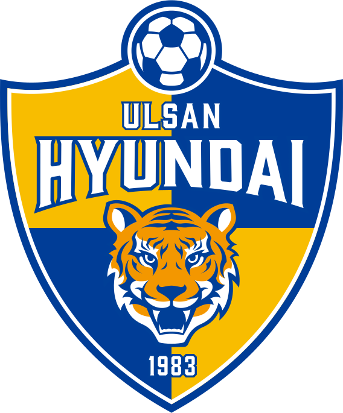

사진을 클릭하면 영상 링크로 이동합니다
울산 HD FC의 역사
History of Ulsan HD FC
1983 - 2024
   
V
V
V
창단
1983년 12월 6일 인천/경기 지역을 연고로 한 현대 호랑이 축구단 창단식을 갖고, 1984년부터 프로축구 리그에 참가했다. 당시 허정무, 최강희 등을 창단 멤버로 영입하며 호화 군단을 편성했다. 첫 해는 3위를 기록했다.
첫 K리그 우승
vs 수원삼성
1996 라피도컵 프로축구대회에서 전기리그 우승 및 종합 16승 3무 13패로 챔피언 결정전에 진출하였다. 당시 신생팀이었던 수원 삼성 블루윙즈와의 사투 끝에 종합 스코어 3 : 2로 첫번째 리그 우승을 차지했다.
두번째 K리그 우승
vs 인천유나이티드
15승 4무 8패를 기록하였고, 9년 만에 울산의 창단 두 번째 K-리그 우승을 차지했다. 당시 유상철, 마차도, 현영민, 유경렬, 서동명, 김지혁 등 기존 전력에다가 여름에 합류한 이천수와 최성국 콤비로 공격력을 극대화했고 결국 인천과의 챔피언결정전 1차전 원정에서 무려 5:1 대승을 거두는 공격력을 선보였다.
첫 ACL 우승
vs 알 아흘리 SFC
무패로 결승까지 진출하였다. 사우디아라비아 명문 알 아흘리 SFC와의 경기에서 3:0으로 울산이 승리한다. 이로서 울산은 AFC 챔피언스 리그 무패 우승의 신화를 창조한다!
첫 FA컵 우승
vs 부산아이파크
리그 시즌 성적은 4위로 확정, 리그에서 아챔 진출권을 따내는 데는 실패하였다. 아챔 진출을 위해서는 FA컵에서 부산을 꺾고 승리해야만 하는 상황이 되었다. 그리고 1차전에 1:2로 이기고 2차전에서 0:0으로 비기며 마침내 FA컵 우승 트로피를 들어올리게 되었다.
두번째 ACL 우승
vs 페르세폴리스
리그와 FA컵에서 전북에 연달아 패배하며 두 대회 준우승을 하였다. 코로나로 카타르에서 단기간 열리게된 ACL 무대에서 또 한 번 무패우승으로 구단 두번째 ACL 우승을 달성했다.
세번째 K리그 우승
17년 만의 리그 우승!
2019년부터 3년의 준우승의 아픔을 겪고, 35라운드 전북과의 맞대결에서 후반 추가시간 극적 역전승을 거두었고, 결국 37R 강원 전에서 꿈에 그리던 K리그 챔피언의 자리에 17년만에 올라섰다.
네번째 K리그 우승
창단 첫 2연패!
초반 압도적인 페이스로 승점을 쌓으며, 중후반 위기도 겪었지만 구단 최초 2연패에 성공한다.
다섯번째 K리그 우승
3연패!
시즌 중반 홍명보감독이 국가대표팀 감독으로 가는 어려움을 겪었지만 새로 선임된 김판곤 감독과 함께 큰 승점차로 우승에 성공하며 구단 최초 3연패에 성공한다.
Explore More